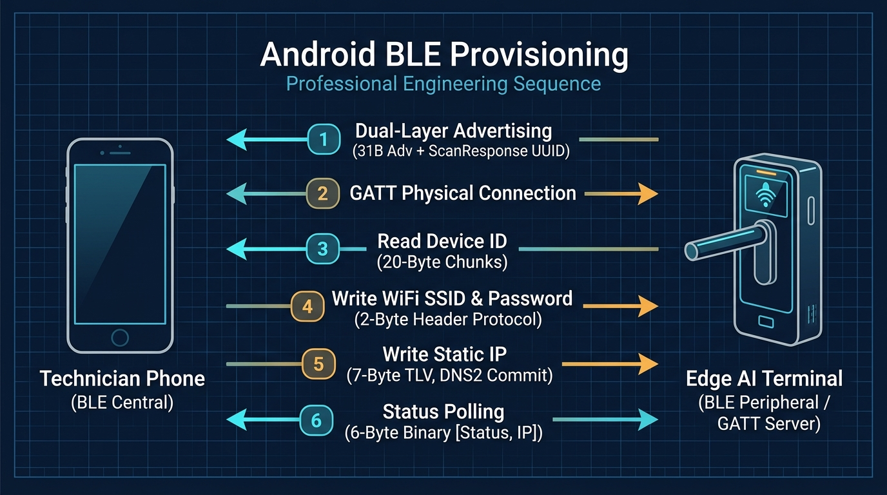
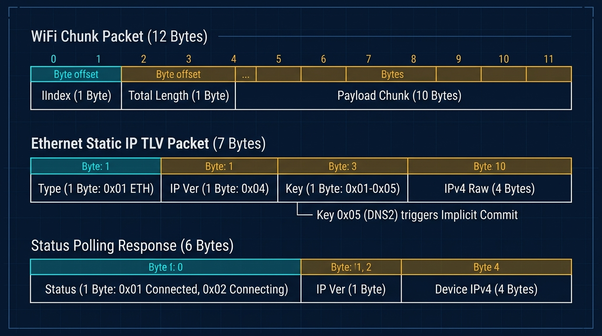

Android 爛裝置想跑人臉辨識14 – 門禁機當 BLE Peripheral 的現場踩坑記
做邊緣工控或門禁設備，最讓人頭痛的往往不是演算法，而是現場環境：機器被四顆螺絲死死鎖在兩公尺高的金屬立柱上，沒有鍵盤、沒有滑鼠，很多室外機為了防暴甚至連觸控螢幕都沒有。就算螢幕能碰，叫工人站在鋁梯上頂著大太陽反光，用虛擬鍵盤慢慢戳 20 幾碼的 WiFi 密碼，戳錯一次就要摔手機。
最合理的人性化作法，就是工人掏出自己的手機 App，走過去點幾下，透過近場藍牙把網路帳密和 IP 直接灌進去。
這篇就拿高通 QM215（4 顆弱雞 A53）門禁機為例，聊聊我們怎麼用最簡單粗暴的 BLE Peripheral（GATT Server） 把現場配網搞定，以及當初留下了哪些讓人哭笑不得的技術債。
先講結論：這套設計的五個核心決策
面試或日後自己複盤，先看這五個核心取捨：
- 門禁機當被動方（Peripheral / GATT Server）：手機當主動發起方（Central）。廣播丟給藍牙晶片硬體自己去排程發射，主 CPU 負載直接是 0%，完全不搶相機人臉辨識的算力。
- 廣播封包拆兩層：31 Byte 空間太擠塞不下 128-bit UUID。第一層只放短機號，長 UUID 丟到第二層（ScanResponse），等手機主動要才給。
- 老老實實切 20 Byte：不搞動態 MTU 協商，自研極簡的 2-Byte 標頭狀態機和 7-Byte TLV，幾十行 code 搞定，任何爛手機都能通。
- 放棄推播，無腦輪詢：Notification 太容易被手機廠牌的省電機制吃掉，直接讓手機每秒主動 Read 一次狀態，讀到 1 亮綠燈收工。
- 開機常駐永不關閉：設備本來就是插市電的，哪天現場換路由器或改密碼，走過去隨時能重設，省得搬梯子拆外殼拔電源。
下圖是整套系統現場跑通的完整時序：

一、 通訊選型：為什麼不能只靠廣播，非要建 GATT 連線？
剛碰藍牙的人常有一種天真的想法：「既然只是傳幾十個字元的帳密，設備直接對外發廣播、或者手機大喇叭發廣播讓設備抓，不就省事了？」
在實際工程上，這純屬幻想：
- 純廣播（Advertising）：這東西本質就像里長廣播器，單向喊話、完全沒有收到確認（ACK），而且有效空間被死死卡在 31 Bytes。配網是一連串有先後順序的動作（送帳號 $\rightarrow$ 送密碼 $\rightarrow$ 設定固定 IP $\rightarrow$ 確認連上後台）。廣播在空中漏掉一個字你毫無感知，長一點的密碼根本塞不下。
- GATT Server 連線：走點對點通道，每一次 Characteristic 寫入都有底層協議層的 ACK（Write with Response），收到就是收到，沒收到手機會重試，這才能保證資料不會缺角。
1.1 角色為什麼必須倒轉？
很多安卓範例都在教你用手機去連手環，所以設備常常被寫成主動去掃描的手機端（Central）。 但在工控機上千萬別這麼搞。現場大門每天幾百人進出，門禁機要是開掃描，藍牙晶片抓到幾百隻耳機手環的廣播，狂發中斷給 CPU，相機影像幀立刻掉得亂七八糟。 讓門禁機乖乖當被動等待的 Peripheral（GATT Server），開機把廣播資料丟給藍牙晶片後，主晶片完全不管它，CPU 開銷直接歸零。
1.2 31-Byte 廣播太小怎麼破？
傳統廣播封包物理極限只有 31 Bytes。扣掉藍牙規範必帶的標頭和發射功率，剩下的空間少得可憐。如果硬要把 18 Bytes 的專屬 128-bit Service UUID 塞進去，設備名稱只剩幾個字元能用，開廣播直接報錯。
解法很單純，直接拆成雙層廣播：
- 第一層主廣播：只放裁剪後的短機號與發射功率，讓手機在列表裡一眼能認出來；
- 第二層掃描回應（ScanResponse）：把長長的一串 Service UUID 塞在這裡，等手機點擊掃描時才回傳。
// File: BleService.java
// 裁剪固定前綴，保留唯一序號以符合長度限制
uniqueSerial = DeviceCodeUtils.getSerialNum().substring(4);
bluetoothAdapter.setName(deviceName + "-" + uniqueSerial);
// 第一層：僅包含名稱與發射功率（31B 內）
AdvertiseData advertiseData = new AdvertiseData.Builder()
.setIncludeDeviceName(true)
.setIncludeTxPowerLevel(true)
.build();
// 第二層：將 128-bit UUID 移至掃描回應
AdvertiseData scanResponse = new AdvertiseData.Builder()
.addServiceUuid(new ParcelUuid(UUID_SERVICE))
.build();
二、 預設 20-Byte 限制下的長資料分包實作
藍牙規範預設的單包淨載（Payload）只有 20 Bytes。
但我們配網要傳 60 幾 Byte 的加密設備序號、二三十 Byte 的 WiFi 帳密和一整組 IP 設定。面對超過 20 Bytes 的資料，我們沒有去搞什麼動態 MTU 協商（各家白牌手機對 MTU 回調的相容性極差），而是用最直接的二進制分包搞定：

2.1 讀取 Device ID：特徵值分片讀取
設備序號太長，Server 就動態註冊多個虛擬特徵值，讓手機像翻書一樣一片一片讀走：
// File: BleService.java
private final int DEVICE_ID_CHUNK_SIZE = 20;
if (characteristic.getUuid().toString().startsWith(STR_CHAR_READ_DEVICE_ID_CHUNK_PREFIX)) {
char[] uuid = characteristic.getUuid().toString().toCharArray();
int shift = DEVICE_ID_CHUNK_SIZE * (uuid[uuid.length - 1] - '0');
mBluetoothGattServer.sendResponse(device, requestId, BluetoothGatt.GATT_SUCCESS, 0,
Arrays.copyOfRange(DeviceCodeUtils.getCode().getBytes(), shift, shift + DEVICE_ID_CHUNK_SIZE));
return;
}
老代碼的技術債：注意看這行
uuid[uuid.length - 1] - '0'。當初偷懶用單一字元減法算索引，代表這套寫法最多只能切 0 到 9 共 10 個分片（上限 200 Bytes）。如果未來憑證長度超過 200 Bytes，這段直接翻車。
2.2 寫入 WiFi 帳密：2-Byte Header 分包
手機寫入長字串時，封包帶上 [Index(1B), TotalLength(1B), Payload(10B)]：
// File: BleUtils.java
public static boolean multipleBytesToString(byte[] bytes, StringBuffer sb) {
// 前 2 bytes 為自定義協定標頭：byte[0]=分包序號, byte[1]=總預期長度
int index = bytes[0] & 0xFF;
int length = bytes[1] & 0xFF;
int expectedLen = index * 10;
if (expectedLen < sb.length()) {
sb.delete(0, sb.length()); // 序號變小：代表重傳了，清空重收
} else if (expectedLen != sb.length()) {
return false; // 掉包了：丟掉等待重傳
}
// 從 byte[2] 開始才是實際的 payload 資料
String payload = new String(bytes, 2, bytes.length - 2, StandardCharsets.UTF_8);
sb.append(payload);
return length == sb.length(); // 收滿預期長度才算完工
}
// File: BleService.java
@Override
public void onCharacteristicWriteRequest(BluetoothDevice device, int requestId,
BluetoothGattCharacteristic characteristic,
boolean preparedWrite, boolean responseNeeded,
int offset, byte[] requestBytes) {
BleUUID bleUUID = BleUUID.getEnum(characteristic.getUuid());
if (bleUUID == BleUUID.CHAR_WRITE_WIFI_SSID) {
if (BleUtils.multipleBytesToString(requestBytes, sbWifiSsid)) {
wifiSSID = sbWifiSsid.toString();
if (!wifiSSID.isEmpty() && wifiPSW != null && !wifiPSW.isEmpty()) connectToWifi(wifiSSID, wifiPSW);
}
}
// 關鍵：只有當 BLE 規範要求回覆（Write Request）時才送 ACK
// Write Command (WRITE_TYPE_NO_RESPONSE) 不需回覆，強行回覆會導致協議棧狀態機錯亂
if (responseNeeded) {
mBluetoothGattServer.sendResponse(device, requestId, BluetoothGatt.GATT_SUCCESS, offset, requestBytes);
}
}
2.3 寫入乙太網路靜態 IP：7-Byte TLV 與隱式 Commit
工廠大多走固定 IP。我們直接用 7 個 Byte 的二進制解決：[Type(1B), Ver(1B), Key(1B), IPv4(4B)]。
手機依序寫入 IP、Mask、Gateway、DNS1、DNS2。我們把 DNS2 當成「隱式 Commit」——寫入最後一筆時，直接觸發網卡重啟生效，省去再來回確認一次：
// File: BleService.java
case 0x05: // Key=0x05 (DNS2) 觸發隱式 Commit
staticIpConfig.dns2 = BleUtils.ipv4ToString(Arrays.copyOfRange(requestBytes, 3, requestBytes.length));
if (ethernetManager == null) ethernetManager = new EthernetManager(context);
ethernetManager.setStaticIp(staticIpConfig); // 生效設定並重啟網卡
staticIpConfig = null; ethernetManager = null;
break;
三、 狀態同步：放棄 Notification，無腦輪詢最穩
照官方標準做法，連網成功應該用 GATT Notification 推播給手機。
但在現場實測時，很多白牌手機寫入 CCCD（0x2902 描述符）常因自帶的省電策略或權限問題把回調吞掉，手機端永遠等不到「已連線」推播。
門禁機本來就插著市電，根本沒差這點電。最穩的辦法，就是讓手機連上後，每秒主動發一次 Read 來問狀態特徵值（回傳 6 個 Byte）：
// File: BleService.java
case CHAR_READ_NOTIFY_SERVER_CONNECTED:
byte status = BleUtils.IDLE;
if (SyncDataService.getInstance().isConnected()) {
status = BleUtils.CONNECTED; // 0x01
} else if (SyncDataService.getInstance().getWebSocketConnecter().isConnecting()) {
status = BleUtils.CONNECTING; // 0x02
}
byte[] bytes = BleUtils.deviceIpv4ToBytes(status, DeviceServ.getDeviceDBItem().getIpAddress());
mBluetoothGattServer.sendResponse(device, requestId, BluetoothGatt.GATT_SUCCESS, offset, bytes);
手機讀到 status == 0x01 亮綠燈，收工斷線。無狀態、不靠回調，現場 100% 穩定收斂。
四、 程式碼裡的真實技術債
回頭客觀審視這套代碼，裡面有兩個實打實的地雷：
- 資安裸奔：WiFi 帳密跟後台網址在空中全是明文。在封閉的廠區還能勉強混過去，但只要面對正規資安稽核，這條絕對直接吃缺失；
- JMM 跨執行緒可見性災難（現場偶發逾時的真兇）：
看這段代碼：
// File: BleService.java
private boolean serverHostDone; // 致命錯誤：缺少 volatile 修飾！
ThreadPoolManager.getInstance().execute(() -> {
int count = 0;
while (count < 10) {
if (serverHostDone) { // 跨執行緒讀取，很容易一直讀到 CPU 快取舊值
String fullAddress = sbServerHost.toString().replaceFirst("^(http[s]?://)", "");
SettingServ.setSyncServerIp(fullAddress);
serverHostDone = false;
return;
}
Thread.sleep(2000);
count++;
}
// 20 秒一到直接退出，後台網址永遠沒寫進去
});
變數 serverHostDone 是在 Binder 執行緒被修改，但輪詢是在執行緒池的另一條 Worker 執行緒。因為沒加 volatile，Worker 執行緒完全可能一直讀到舊的 false。20 秒盲等結束直接放棄，這正是現場偶發「明明配了網，機器卻死活連不上後台」的罪魁禍首。
五、 現場排查速查清單 (Troubleshooting Cheat Sheet)
日後維護或面試被問到現場排障，看這三點：
- 現象 1：手機搜得到廣播，但連線時一直卡住或秒斷
- 排查點：確認
BleService.java的onCharacteristicWriteRequest結尾有沒有無條件呼叫sendResponse()回覆 ACK。漏掉這行，手機藍牙 Stack 會一直等直到逾時。
- 排查點：確認
- 現象 2：WiFi 配網成功，但一直顯示未連上後台
- 排查點：檢查
serverHostDone有沒有加volatile；檢查那段 20 秒的盲等迴圈是不是比手機寫入網址的時間還早結束。
- 排查點：檢查
- 現象 3：廣播名稱在手機列表被切斷，或廣播拋出 Code 1 錯誤
- 排查點：第一層主廣播資料有沒有超過 31 Bytes；確認 128-bit Service UUID 有沒有乖乖待在第二層 ScanResponse。
結語：為什麼連上網路後不把藍牙關掉？
很多人第一反應都是：「既然 WiFi 都配好了，為什麼不呼叫 stopBleService() 關掉藍牙省電？」
但你想想現場維護情境：
- 門禁機插著電，待機功耗根本不用省；
- 機器掛在兩公尺高處，哪天現場總務改了 WiFi 密碼或換了路由器，機器一斷線就失聯。如果藍牙被關了，工人就得搬鋁梯拆機拔插頭重開機；
- 維持 7x24 常駐廣播，後續維修人員隨時拿手機走過去，點一下就能重新配網。
在工程現場，能活下來的往往不是教科書上最漂亮的架構，而是最懂現場限制、最省維護成本的土砲實作。